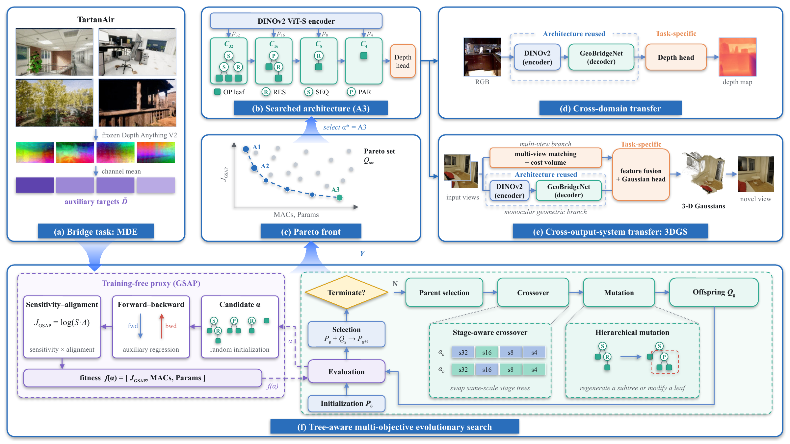
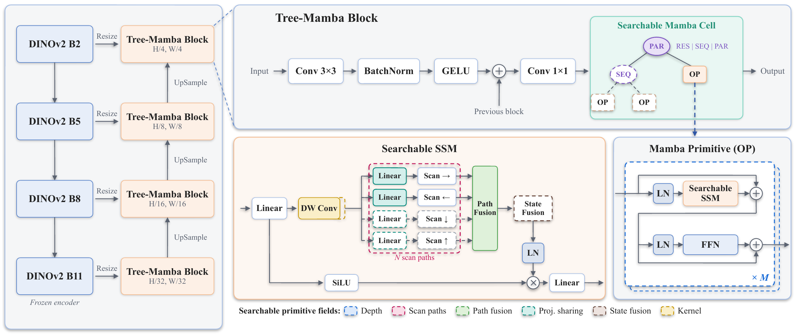
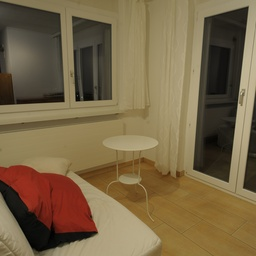
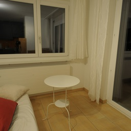
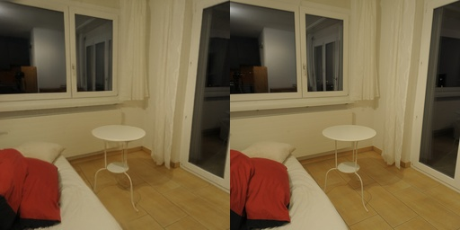
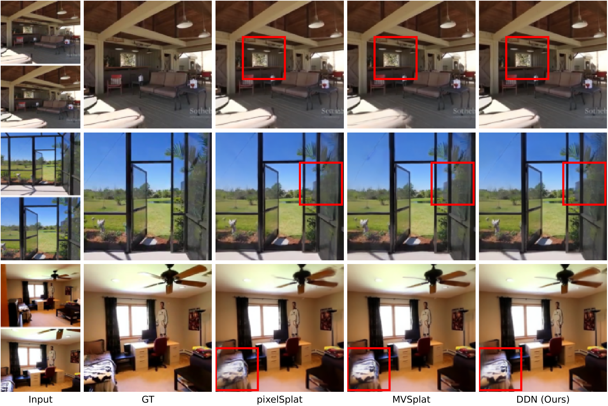

GeoBridge: Evolving Transferable Decoder Topologies for Geometric Vision
Rui Wang1, Haoyu Zhang1, Ran Cheng2
1Hangzhou Normal University · 2The Hong Kong Polytechnic University
Evolve once. Reuse decoder topologies across geometric vision systems. GeoBridge searches stage-internal computation and transfers the selected structures to depth estimation and Gaussian reconstruction, with weights and prediction interfaces trained for each target system.
Compare MVSplat · ECCV 2024 with GeoBridgeNet-A3 on two ETH3D scenes. The cameras are linked: rotate, pan or zoom either view to inspect the same region in both reconstructions.
Drag with left click to rotate view
Scroll to zoom in/out
Drag with right click to move view
WSMoving forward and backward
ADMoving left and right
QEMoving upward and downward
Same two input views · Linked cameras · No scene fine-tuning
Compare the official COS3D · NeurIPS 2025 scene checkpoint with GeoBridgeNet-A3 initialization + COS3D. Select the same text query and inspect both results with linked cameras.
Drag with left click to rotate view
Scroll to zoom in/out
Drag with right click to move view
WSMoving forward and backward
ADMoving left and right
QEMoving upward and downward
(All queried foreground Gaussians are retained; backgrounds are sampled for online rendering)
Reference RGB with the GeoBridgeNet-A3 segmentation overlay.
Abstract
GeoBridge is an evolutionary framework for transferable decoder topologies. Residual, sequential, and parallel composition make stage-internal computation searchable while preserving the interfaces of a fixed multi-scale scaffold. Functional trees support stage-aware crossover and hierarchical mutation; NSGA-II balances a training-free gradient sensitivity-alignment proxy (GSAP) with computation and parameter cost. The selected GeoBridgeNet-A1/A2/A3 structures are reused for monocular depth estimation and Gaussian novel-view synthesis with task-specific training. Their reconstructed scenes also support open-vocabulary segmentation through COS3D refinement.
From Decoder Search to 2D and 3D Geometry

The decoder topology is shared across tasks; trained weights and task-specific modules are separate.
Decoder architecture ＋

Results — Monocular Depth Estimation
NYU Depth V2 and KITTI test the searched decoder across indoor and outdoor geometry. A1–A3 offer increasing model capacity, with A3 giving the best depth accuracy within the GeoBridgeNet family.
Outdoor depth: road structure, vehicles and foreground boundaries.
Results — Novel View Synthesis
The same decoder topology is trained inside a Gaussian novel-view pipeline. Below, two calibrated ETH3D views produce a continuous rendered camera path using the Re10K-trained A3 model, without scene fine-tuning.

Input 1

Input 2
GeoBridgeNet-A3 · rendered novel views →
ETH3D · no scene fine-tuning
Compare with a held-out captured view ＋
GeoBridgeNet-A3 predictionCaptured reference

Quantitative comparison on RealEstate10K
RealEstate10K · novel-view synthesis
Method
PSNR ↑
SSIM ↑
LPIPS ↓
Params ↓
pixelNeRF
20.43
0.589
0.550
—
pixelSplat
25.89
0.858
0.142
119M
MVSplat
26.39
0.869
0.128
12M
DepthSplat
27.47
0.889
0.114
354M
GeoBridgeNet-A1
27.02
0.879
0.119
52.4M
GeoBridgeNet-A2
27.07
0.881
0.118
53.5M
GeoBridgeNet-A3
27.11
0.878
0.121
62.0M
Current manuscript values. Baselines are source-reported reference results; parameters cover the complete feed-forward pipeline.
GeoBridgeNet-A3 has the highest PSNR within the GeoBridgeNet family, while A2 gives the best SSIM and LPIPS. The variants retain separate reconstruction quality and model-size trade-offs.
Qualitative comparisons on RealEstate10K ＋

Results — 3D Semantic Grounding
GeoBridgeNet-initialized Gaussians are refined and passed to the COS3D semantic pipeline. Evaluation covers Figurines, Teatime, Ramen and Waldo Kitchen, using the same downstream protocol for all three GeoBridgeNet variants.
LERF · mean over four scenes
Method
mIoU (%) ↑
mAcc (%) ↑
COS3D (shallow MLPs)
49.75
70.60
COS3D (kernel regression)
50.76
72.08
OpenGaussian · NeurIPS 2024
38.36
51.43
Dr. Splat · CVPR 2025
43.58
63.87
InstanceGaussian · CVPR 2025
45.30
58.44
GeoBridgeNet-A1 init. + COS3D
51.06
70.58
GeoBridgeNet-A2 init. + COS3D
49.77
67.87
GeoBridgeNet-A3 init. + COS3D
50.54
71.32
GeoBridgeNet values are from the current manuscript. External baseline values are reported in the COS3D paper's LeRF comparison, not newly measured here. mAcc denotes Acc@0.25 in the COS3D evaluator.
Text-conditioned object isolation from the GeoBridgeNet-A3-initialized scene representation.
Acknowledgements
Our task-transfer pipelines build on DepthSplat and COS3D / Gaussian Splatting. Footage and data: Rui Wang, Curtis Adams / Pexels, ETH3D and LERF. See media sources and licenses.
Tables summarize the current manuscript; they do not report measurements of the displayed demo clips. Released-checkpoint evaluation notes are available in the repository.